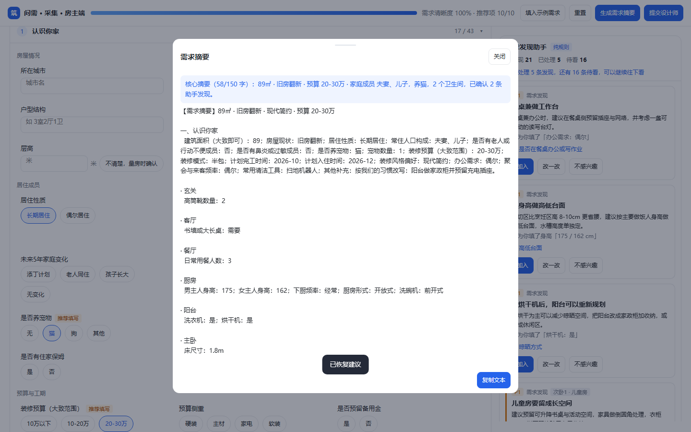
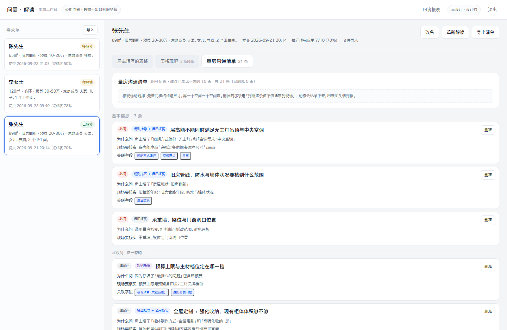
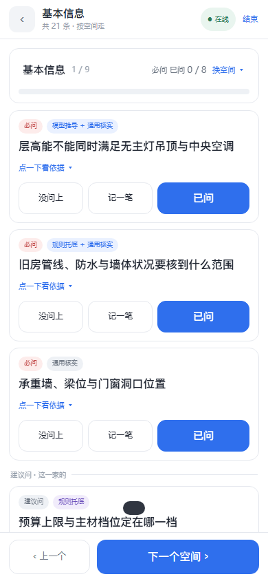

本页目录
01 / 漏需求在哪里
需求单填完了，为什么仍会返工？
需求从房主到设计师会漏两次：一次说不清，一次问不全。
研究样本
3 位设计师，每人一场 46–58 分钟访谈。
三家公司都有需求表，但三位设计师实际只稳定使用面积、户型和常住人口三个字段。房主面对大量专业字段，往往只能填写自己已经想到的部分；现场条件、预算口径和家庭成员的真实使用习惯仍会缺失。
三场访谈共整理出 15 个“该问而没问”的具体案例，全部在量房之后才暴露。问题不是设计师没有经验，而是量房当天缺少一张能兜住遗漏、又能快速执行的表。
- 项目来源
- 22 个住宅项目现场经验
- 研究目标
- 找出漏问发生的环节，而不是堆功能
- 首要产物
- 必问清单、现场记录与遗漏回流

问需 · 房主采集端
02 / 三端链路
一份需求，穿过三个不同的现场。
采集端补全事实，解读端形成判断，现场端把判断落实成记录。
同一份数据
字段、规则、来源标记和验收口径在三端保持一致。
采集端不是缺项催填表。它先让房主处理与自己情况相关的发现，再把事实和待确认项交给设计师。解读端将候选合并、去重并按返工代价排序，现场端则按空间逐条执行，支持“问不上”和“记一笔”。
三端差异来自使用情境：房主在手机上填，设计师在电脑前准备，现场人员单手拿手机。字段和判据保持同一套，避免各端产生不同口径。
- 房主端
- 小程序 / 手机版 / Web
- 解读端
- 桌面工作台
- 现场端
- 手机 PWA，可离线记录

问需 · 设计师解读端
03 / 关键判断
不是把所有判断都交给模型。
模型负责解释线索，代码负责规则、优先级和边界。
研究校正
3 位设计师都拒绝 30 条平铺清单，可接受量为 5–8 条。
- 必问数量
- 清单必须少，而且有优先顺序。必问按“不确认就会返工或影响报价”排序，控制在 5–8 条；30 条平铺会让设计师直接放弃使用。
- AI 边界
- 模型只在解读端提供候选和原因。档位、条数上限、来源合并和去重由确定性规则完成，避免每次生成不同口径。
- 现场分工
- “问客户”和“现场测量”分开。房主不知道管线、净高和洞口尺寸，强行要求其填写只会制造不可靠数据。
- 数据边界
- 敏感字段外发前脱敏并留审计。三端共享同一份字段与规则，但不把完整私有数据无控制地传给模型。
产品判断不是把问题问得更多，而是让设计师在有限时间内先确认最可能导致返工的事项。

问需 · 现场执行端
04 / 证据
这项结论来自什么？
证据来自访谈、项目记录和线上三端链路，不等于规模化用户验证。
研究性质
探索性研究，只报告方向与边界案例，不计算支持率。
研究访谈覆盖独立工作室主理人、整装公司主任设计师和门店跑量设计师。三位都反馈现有需求表字段过多、真正可用信息少，且现场返工多发生在量房之后。
线上三端可以走通“采集 → 解读 → 现场 → 回流”的演示链路，并使用同一份浏览器内数据。它证明流程已经实现，不代表已经获得真实企业的长期使用或效率提升数据。
05 / 边界
哪些已经完成，哪些没有。
把研究限制和未验证部分留在作品集里。
当前形态
可访问的三端线上演示，不等于生产部署。
已经完成
- 完成房主采集、设计师解读和现场执行三端可访问演示。
- 形成 5 类遗漏台账，并把必问数量收敛到 5–8 条。
- 规则、来源标记、脱敏和遗漏回流进入同一条产品链路。
尚未验证
- 仅访谈 3 位设计师，不能代表全部用户。
- 房主侧结论来自设计师转述，不是房主一手访谈。
- 尚未证明实际降低返工率，也未完成企业级接入和规模化使用。
研究里没有完成的部分
- 必问具体条目的卡片分档测试未完成，当前规则仍需用真实使用数据校准。
- 发现卡片的独立判定测试未完成，不能把设计假设写成已验证结论。
- 没有对外宣称返工率下降；现有数字只用于理解单次返工代价。